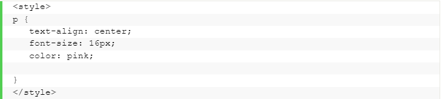

- Home
- PJOK
- Informatika
- Biologi
- Inggris
-
Sejarah

Pengantar CSS
CSS adalah bahasa Cascading Style Sheet dan biasanya digunakan untuk mengatur tampilan elemen yang tertulis dalam bahasa markup, seperti HTML. CSS berfungsi untuk memisahkan konten dari tampilan visualnya di situs.
Kelebihan CSS
Sebelum menggunakan CSS, semua stylizing harus disertakan ke dalam markup HTML. Itu berati Anda harus mendeskripsikan semua background, warna font, alignment, dan lain-lain secara terpisah. Dengan CSS, Anda dapat mengatur tampilan semua aspek pada file yang berbeda, lalu menentukan style, kemudian mengintegrasikan file CSS di atas markup HTML. Alhasil, markup HTML bisa lebih mudah di-maintain. Singkatnya, dengan CSS, Anda tidak perlu mendeskripsikan tampilan dari masing-masing elemen secara berulang-ulang. Anda tidak membuang-buang waktu, kode yang digunakan pun lebih singkat, dan error dapat diminimalisir. Karena opsi kustomisasi yang ada hampir tak terbatas, CSS memungkinkan Anda untuk menerapkan berbagai macam style pada satu halaman HTML.
Jenis-jenis CSS
CSS Style Internal diload setiap kali website di-refresh, dan kekurangannya adalah waktu loading semakin lama. CSS style yang sama pun tidak dapat digunakan di halaman lain karena sudah aktif terlebih dulu di suatu halaman.
External merupakan CSS style yang paling mudah dan tidak menyulitkan. Semuanya dilakukan secara eksternal pada file .css. Styling dilakukan di file terpisah, lalu terapkan CSS ke halaman mana pun yang Anda inginkan. Sayangnya, CSS Style External juga memperlama waktu loading.
CSS Style Inline menggunakan elemen spesifik yang memuat tag style. Karena setiap komponen harus di-stylize, maka Inline bukan metode yang tepat jika Anda ingin menggunakan CSS dengan cepat.
Contoh kode CSS
